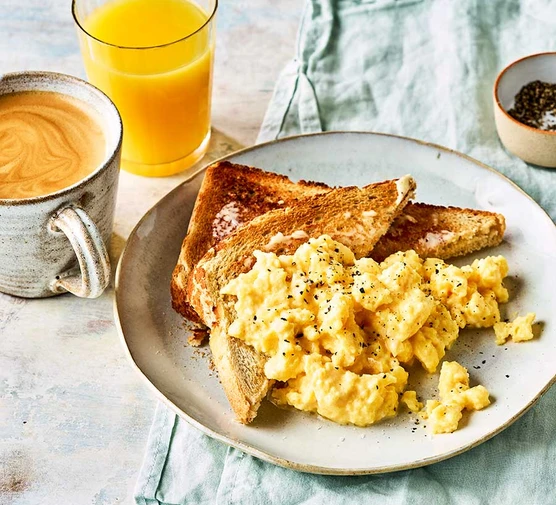

Scrambled Eggs Recipe

guys this is not my image they probably wont look like this im sorry
Description
This recipe will teach you how to make basic but delicious scrambled eggs. They will take you less than 10 minutes to make and will be very worthwhile!
Ingredients
- 2 large eggs
- 1 tsp butter
- 1/2 tsp sour cream
- salt and pepper
- 2 pieces of toast
- salami optional
Steps
- First, beat two eggs in a bowl with a fork. You can add a pinch or two of salt here.
- Put your pan on medium heat and add a tsp of butter.
- Once the butter has melted, add in your eggs and continually stir it. You may also want to begin toasting your bread here.
- When the eggs are a little more than halfway done, add in the sour cream and stir.
- Cook to your desired doneness, season, and serve with toast and any optional sides.
Return to top
Return to main page